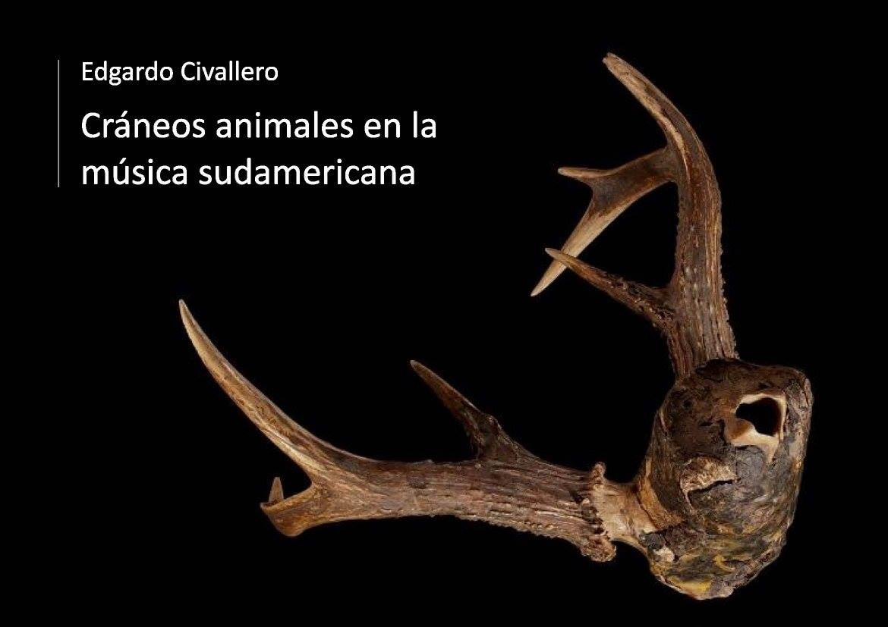

Cráneos animales en la música sudamericana
Inicio > Libros digitales sobre música > Cráneos animales en la música sudamericana
Cómo citar este trabajo: Civallero, Edgardo (2025). Cráneos animales en la música sudamericana. Edición de archivo. Bogotá: El Zorro de Abajo Editora.
Descargar en PDF.
Este libro presente una investigación organológica, histórica y etnográfica de gran amplitud sobre el uso ritual, simbólico y musical de cráneos animales (y en algunos casos humanos) en las tradiciones sonoras del continente sudamericano. Basado en fuentes arqueológicas, crónicas coloniales, documentación etnográfica y registros de campo, el texto reconstruye una historia densa y sorprendente que une la materialidad ósea con las prácticas sonoras, los mitos de origen y los sistemas rituales de pueblos andinos y amazónicos.
Desde su introducción se establece que los cráneos han sido empleados como parte de bocinas, flautas y silbatos, por razones tanto prácticas como ceremoniales. Se trata generalmente de piezas pequeñas o medianas —de venado, armadillo o perro—, adaptadas a la mano del intérprete y transformadas en resonadores de una música cargada de sentido cosmológico. Este uso, presente hasta hoy en comunidades originarias, hunde sus raíces en contextos prehispánicos documentados por hallazgos arqueológicos y crónicas tempranas.
En los Andes meridionales, el registro arqueológico confirma la existencia de flautas confeccionadas con cráneos de armadillo (Euphractus sexcinctus), halladas en cementerios de Iquique (Chile) y Jujuy (Argentina), datadas entre los siglos XIII y XV. Los cronistas del siglo XVI y XVII —Garcilaso de la Vega, Guaman Poma de Ayala, Arriaga, Cobo— describen el uso de cabezas de perro y venado en los rituales huanca y en las danzas del wawku taqui, donde los hombres soplaban cráneos de venado mientras las mujeres cantaban. El sonido era entendido como la voz del animal y como vínculo con lo sagrado. Tras la conquista, la Iglesia prohibió estas prácticas por considerarlas "idólatras", ordenando la destrucción de los instrumentos, aunque los testimonios demuestran su persistencia clandestina en festividades y rituales rurales hasta bien entrado el siglo XVII.
El estudio continúa con un recorrido por las tierras bajas —Chaco, Amazonia, Orinoquia y Guayana—, donde el uso de cráneos como aerófonos y sonajas se mantiene ampliamente documentado. En el Chaco paraguayo, los Chamacoco o Yshyr utilizaban silbatos de cráneo de armadillo, símbolos de estatus social reservados a los líderes (pelótak). En Brasil, se describe una trompeta ritual de los Yuruna del Xingú construida con bambú y una calavera humana como pabellón, pieza hoy conservada en el Museo Luigi Pigorini de Roma. Entre los Karajá, cráneos de mono sirven como maracas, una de las pocas adaptaciones no aerofónicas registradas.
En el noroeste amazónico —frontera entre Colombia y Brasil—, Theodor Koch-Grünberg documentó flautas de cráneo entre los Tukano, elaboradas con cabezas de venado, coatí o tigre, recubiertas de brea, con los orificios nasales y el occipital abiertos para producir el sonido. Estas formas, replicadas entre los Baniwa, Palikur y Parintintin, funcionan como juguetes o instrumentos rituales menores. Koch-Grünberg y Wiffen interpretaron estos objetos como herencias andinas difundidas hacia las tierras bajas.
El texto avanza detallando la persistencia y las variantes locales. Entre los Desano, las flautas de cráneo de venado se tocan en las fiestas dabucuri para acompañar el caxiri (bebida fermentada de yuca), y entre los Mirañá, el instrumento —òúkò— se usa para anunciar la llegada de los cazadores, confeccionado con cráneos de Mazama gouazoubira o M. americana. Su forma y sonido evocan el vuelo del ciervo volante, insecto mítico del bosque, y los cuernos se asocian a las mandíbulas del escarabajo. Los Cacua, Barasana, Tatuyo, Macuna, Bara y Mitúa fabrican silbatos semejantes con cráneos de venado o armadillo, combinando cera, resina y huesos de ave. En los rituales del Vaupés, estos instrumentos integran conjuntos que también incluyen flautas de caña, maracas y tambores, configurando complejas ecologías sonoras masculinas y ceremoniales.
El recorrido se amplía con los Guahibo, Guayabero y Piapoco, que utilizan flautas globulares de cráneo de corzuela colorada en funerales y ritos de re-entierro, selladas con cera de abeja. En Venezuela, estas flautas —llamadas owebi mataeebo o "cachos de venado"— participan en las Fiestas del Guarapo y en ceremonias de iniciación femenina. Las astas permiten sujetarlas y actúan como asas simbólicas. Los Piaroa, en cambio, fabrican el remü con cráneo de armadillo gigante (Priodontes maximus), cubierto con cera negra e incrustaciones de cuarzo, usado solo por chamanes en exorcismos: el soplo y el golpe del instrumento expulsan a los espíritus malignos. Otro modelo, el tua ü de cráneo de lapa (Cuniculus paca), mantiene la misma técnica.
El ejemplo más conocido procede del Baile de las Turas (o Estercuye) en el occidente de Venezuela. Derivado de antiguas ceremonias agrícolas jirajara y ayamán, el rito se celebra dos veces al año con conjuntos de músicos que ejecutan pares de cráneos de venado y matacán, combinados con flautas turas y maracas. Los cráneos, sellados con cera y humedecidos antes del soplo, producen un sonido grave que dialoga con los cantos y las percusiones en una textura heterofónica. La música del cráneo se integra así en un complejo ritual agrícola y sincrético que aún se celebra en estados como Falcón y Lara.
El último tramo del estudio se dedica a los Kuna o Dule (Panamá y Colombia), quienes elaboran el tede cala o tedenono a partir de cráneos de armadillo unidos a huesos de ave mediante cera negra. Se trata de un silbato sin orificios, empleado en rituales de pubertad femenina y reservado a músicos expertos. Soplarlo sin conocimiento, según la creencia, atrae el espíritu del armadillo. Los Kuna poseen también el achunono (de cráneo de jaguar) y el goenono (de cráneo de ciervo), que sirven para modificar la voz y dramatizar mitos de caza.
La obra concluye señalando que los cráneos musicales sudamericanos, lejos de ser simples curiosidades organológicas, revelan una continuidad simbólica entre cuerpo, sonido y territorio. Se interpretan como artefactos liminares: restos animales convertidos en instrumentos de mediación entre mundos — la tierra, el bosque, los muertos y los vivos. Cada soplo en un cráneo resucita una voz antigua, un eco de las relaciones entre humanos y no humanos que sustentan las cosmologías del continente. Este trabajo, sostenido en una documentación extraordinaria, ofrece una visión panorámica y profundamente ética del vínculo entre materialidad orgánica, sonido y memoria.